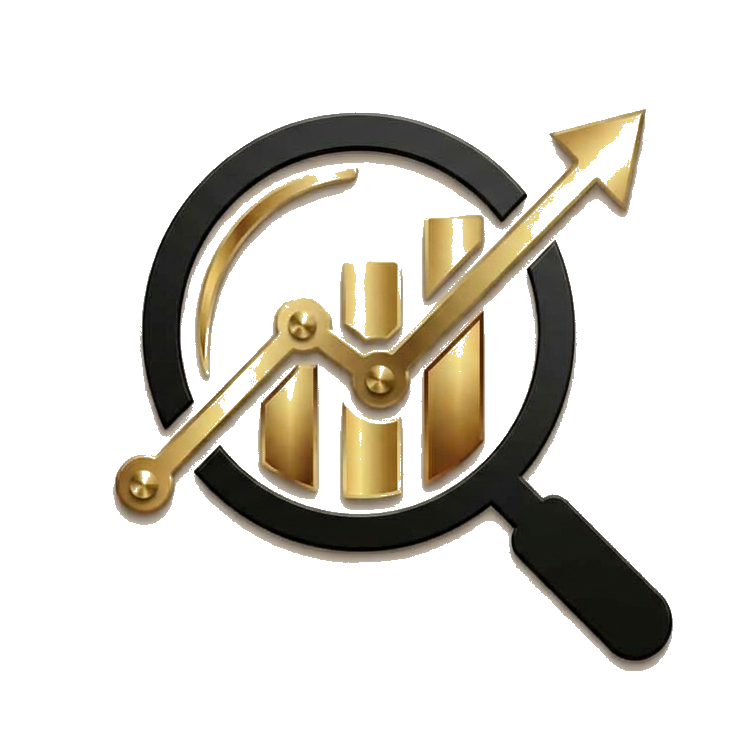

Contrarian TrifectaA three-pillar scoring system that identifies quality businesses trading below intrinsic value. We find quality businesses unfairly punished by the market. You decide what to own.
Enter the ScreenerHow We Score
Every stock is evaluated across fundamentals, market sentiment, and technical positioning. The weights reflect a simple belief: what a business is matters more than what the crowd feels about it.
Sector-relative valuation, earnings quality, balance sheet strength, and cash generation. We compare each stock against its own sector medians, not the broad market.
Analyst ratings, institutional activity, and AI-driven narrative analysis. When sentiment is irrationally negative on a strong business, the opportunity is real.
Price relative to moving averages, RSI, and volume patterns. We look for floor signals—evidence that selling pressure is exhausting itself, not momentum breakouts.
Philosophy
Both approaches work. We lead with contrarian analysis because it aligns with long-term compounding, but we surface momentum signals where they add context.
Most screeners chase what is hot. We find what is undervalued. The distinction matters most in corrections, when momentum portfolios give back gains and contrarian positions begin to recover.
Tailored to You
A screener surfaces opportunities, but the right ones depend on who you are. Your constraints, goals, and temperament determine which signals matter — and that requires a conversation, not just a dashboard.
A conservative investor and an aggressive one looking at the same stock need different answers. Calibrating scores to your profile is where advisory begins.
A five-year horizon can stomach drawdowns that would ruin a six-month thesis. Knowing which applies to you changes everything.
Growth, income, or capital preservation — each goal reshapes which opportunities matter. A retiree seeking dividends and a young investor chasing compounding need entirely different picks from the same data.
Who We Are
We have been advising on equity selection since 2020. When AI became available, we automated the fundamental, technical, and sentiment analysis we used to do manually — and made it better.
Before, serious analysis meant covering around 50 stocks. Now we apply the same rigor across 800+ companies, surfacing opportunities in smaller names that used to be overlooked.
The three-pillar framework — fundamentals, sentiment, technicals — is the same one we built by hand. Software and AI run it faster, more consistently, and without the blind spots that come with human fatigue.
The Math
Einstein may not have called compound interest the eighth wonder of the world, but the math is unambiguous. A patient investor contributing steadily to quality equities will, over decades, accumulate wealth that dwarfs what timing the market could deliver.
The calculator below is not a projection. It is arithmetic. Adjust the inputs to match your situation and see what consistency produces.
We understand every asset class, but after deep study we chose to focus on stock picking advisory since 2020 because it delivers the highest reward for investors willing to be patient. Since 1926, US large-cap equities have returned roughly 10% annualized before inflation, compared to approximately 5% for bonds. The volatility is real, but over any rolling 20-year period, stocks have never lost money. Time is on the side of the patient shareholder.
The screener runs monthly, scoring every stock in the universe across all three pillars. No sign-up. No paywall. Just the data.
Enter the Screener